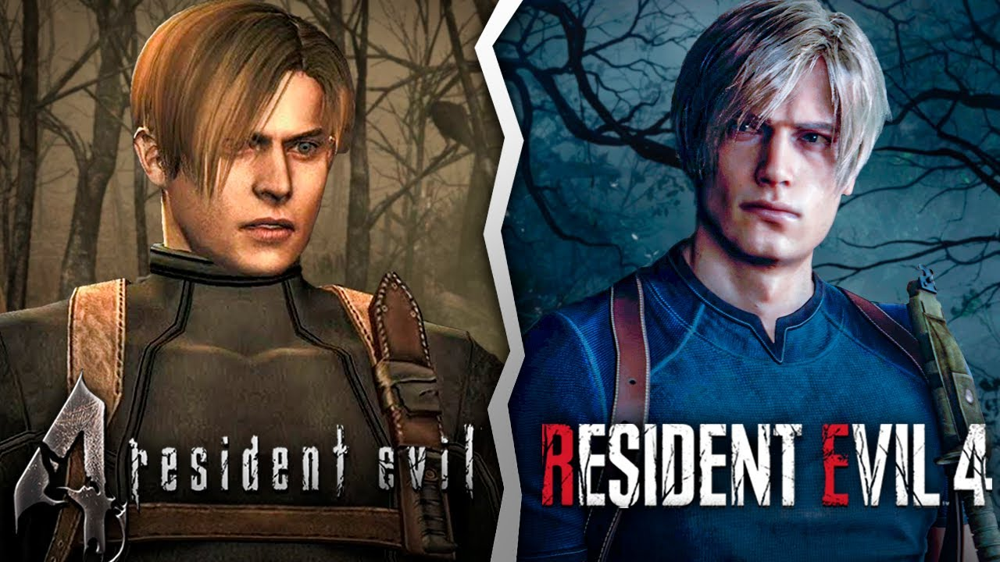

Sobre o game
Leon S. Kennedy, um dos sobreviventes do incidente de Raccoon City, foi recrutado como agente, respondendo diretamente ao presidente dos Estados Unidos. Com a experiência de várias missões nas costas, Leon é enviado para resgatar a filha sequestrada do presidente. Ele a rastreia até uma vila europeia isolada, onde há algo terrivelmente errado com os aldeões. E a cortina se abre nessa história de um ousado resgate e horror de sobrevivência extenuante.
Disponível em: